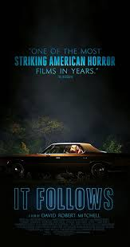
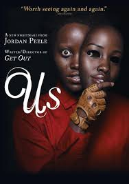
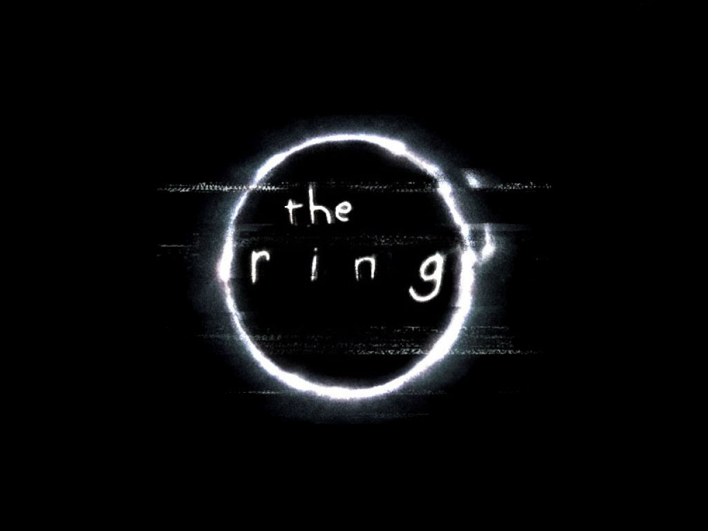
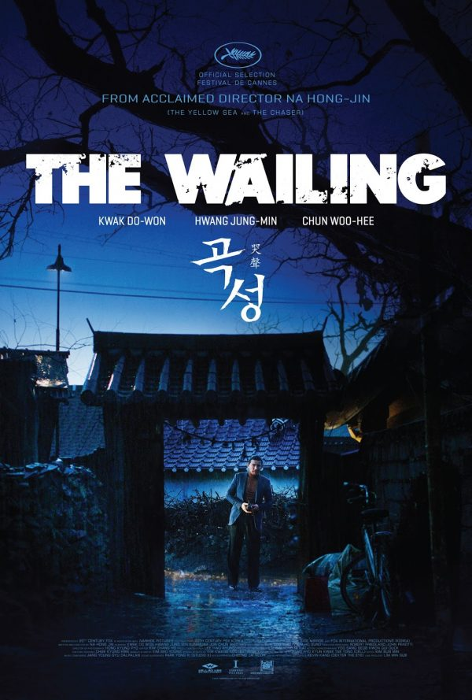
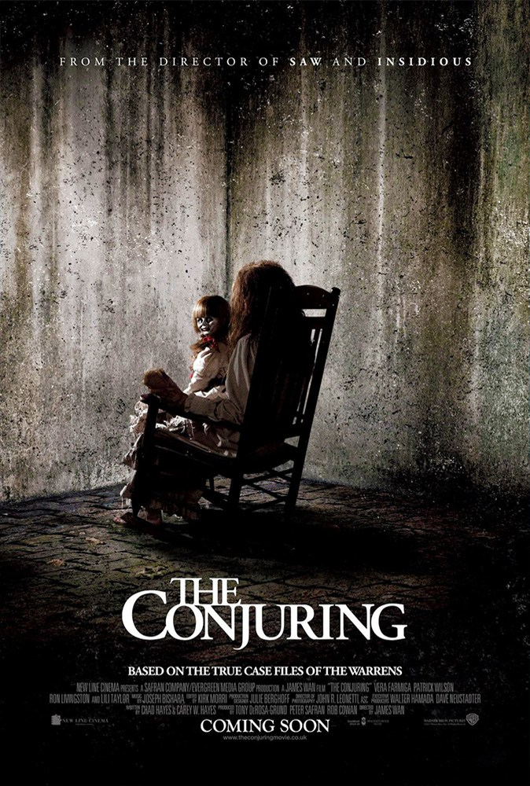

5.1: The Grudge
Ratings : 🌟 5.9
Genre :HorrorMysteryThriller
Release Date : 22 October 2004
Watch-Time : 1h 31min.
Director : Takashi Shimizu
Starring : Sarah Michelle Gellar, Jason Behr, KaDee Strickland, Clea DuVall, Bill Pullman
Box-Office : $187.2 million
Storyline:
Karen Davis, an American Nurse, moves to Tokyo and encounters a supernatural spirit who is vengeful and often possesses its victims. A series of horrifying and mysterious deaths start to occur, with the spirit passing its curse onto each victim. Karen must now find a way to break this spell, before she becomes its next victim.
5.2: It Follows
Ratings : 🌟 6.8
Genre :HorrorMysteryThriller
Release Date : 13 March 2015
Watch-Time : 1h 40min.
Director : David Robert Mitchell
Starring : Maika Monroe, Keir Gilchrist, Daniel Zovatto, Jake Weary, Olivia Luccardi, Lili Sepe
Box-Office : $23.3 million
Storyline:
For nineteen-year-old Jay, Autumn should be about school, boys and week-ends out at the lake. But after a seemingly innocent sexual encounter, she finds herself plagued by strange visions and the inescapable sense that someone, something, is following her. Faced with this burden, Jay and her friends must find a way to escape the horrors, that seem to be only a few steps behind.
4.1: Annabelle
Ratings : 🌟 5.4
Genre : HorrorMysteryThriller
Release Date : 3 October 2014
Watch-Time : 1h 39min.
Director : John R. Leonetti
Starring : Annabelle Wallis, Ward Horton, Alfre Woodard
Box-Office : $257.6 million
Storyline:
John Form has found the perfect gift for his expectant wife, Mia - a beautiful, rare vintage doll in a pure white wedding dress. But Mia's delight with Annabelle doesn't last long. On one horrific night, their home is invaded by members of a satanic cult, who violently attack the couple. Spilled blood and terror are not all they leave behind. The cultists have conjured an entity so malevolent that nothing they did will compare to the sinister conduit to the damned that is now... Annabelle.
4.2: The Nun
Ratings : 🌟 5.4
Genre : HorrorMysteryThriller
Release Date : 7 September 2018
Watch-Time : 1h 36min.
Director : Corin Hardy
Starring : Demián Bichir, Taissa Farmiga, Jonas Bloquet
Box-Office : $365.6 million
Storyline:
When a young nun at a cloistered abbey in Romania takes her own life, a priest with a haunted past and a novitiate on the threshold of her final vows are sent by the Vatican to investigate. Together they uncover the order's unholy secret. Risking not only their lives but their faith and their very souls, they confront a malevolent force in the form of the same demonic nun that first terrorized audiences in 'The Conjuring 2,' as the abbey becomes a horrific battleground between the living and the damned.
3.1: Us
Ratings : 🌟 6.8
Genre : HorrorMysteryThriller
Release Date : 22 March 2019
Watch-Time : 1h 56min.
Director : Jordan Peele
Starring : Lupita Nyong'o, Winston Duke, Elisabeth Moss, Tim Heidecker
Box-Office : $255.2 million
Storyline:
In order to get away from their busy lives, the Wilson family takes a vacation to Santa Cruz, California with the plan of spending time with their friends, the Tyler family. On a day at the beach, their young son Jason almost wanders off, causing his mother Adelaide to become protective of her family. That night, four mysterious people break into Adelaide's childhood home where they're staying. The family is shocked to find out that the intruders look like them, only with grotesque appearances.
3.2: Insidious

Ratings : 🌟 6.8
Genre : HorrorMysteryThriller
Release Date : 1 April 2011
Watch-Time : 1h 43min.
Director : James Wan
Starring : Patrick Wilson, Rose Byrne, Barbara Hershey
Box-Office : $99.5 million
Storyline:
A gripping story of a family in search of help for their son, Dalton, who fell into a coma after a mysterious incident in the attic. Little do they know that there is much more to this endless sleep than meets the eye as they explore the paranormal, and rediscover the past; the key to getting their son back once and for all.
2.1: The Ring
Ratings : 🌟 7.1
Genre : HorrorMystery
Release Date : 18 October 2002
Watch-Time : 1h 55min.
Director : Gore Verbinski
Starring : Naomi Watts, Martin Henderson, David Dorfman, Jane Alexander, Brian Cox, Daveigh Chase
Box-Office : $249.4 million
Storyline:
Rachel Keller is a journalist investigating a videotape that may have killed four teenagers (including her niece). There is an urban legend about this tape: the viewer will die seven days after watching it. If the legend is correct, Rachel will have to run against time to save her son's and her own life.
2.2: It

Ratings : 🌟 7.3
Genre : Horror
Release Date : 8 September 2017
Watch-Time : 2h 15min.
Director : Andy Muschietti
Starring : Bill Skarsgård, Jaeden Martell, Finn Wolfhard
Box-Office : $701.8 million
Storyline:
In the Town of Derry, the local kids are disappearing one by one. In a place known as 'The Barrens', a group of seven kids are united by their horrifying and strange encounters with an evil clown and their determination to kill It.
1.1: The Wailing
Ratings : 🌟 7.5
Genre : HorrorMysteryThriller
Release Date : 3 June 2016
Watch-Time : 2h 36min.
Director : Hong-jin Na
Starring : Jun Kunimura, Hwang Jung-min, Do-won Kwak
Box-Office : US$51.3 million
Storyline:
In the small village Goksung in South Korea, police officer Jong-Goo investigates bizarre murders caused by a mysterious disease. His partner relays gossip that a Japanese stranger, who lives in a secluded house in the mountains, would be an evil spirit responsible for the illness. Jong-Goo decides to visit the stranger along with his partner and a young priest who speaks Japanese. They find an altar with a goat head, pictures on the walls of the infected people that died, and an attacking guard dog that prevents their departure until the stranger arrives. Jong-Goo finds one shoe of his beloved daughter, Hyo-jin, in the house of the stranger, and soon she becomes sick. His mother-in-law summons the shaman Il-gwang to save her granddaughter while a mysterious woman tells Jong-Goo that the stranger is responsible. Who might be the demon that is bringing sickness to Goksung?
1.2: The Conjuring
Ratings : 🌟 7.5
Genre : HorrorMysteryThriller
Release Date : 19 July 2013
Watch-Time : 1h 52min.
Director : James Wan
Starring : Vera Farmiga, Patrick Wilson, Ron Livingston, Lili Taylor
Box-Office : $319.5 million
Storyline:
In 1971, Carolyn and Roger Perron move their family into a dilapidated Rhode Island farm house and soon strange things start happening around it with escalating nightmarish terror. In desperation, Carolyn contacts the noted paranormal investigators, Ed and Lorraine Warren, to examine the house. What the Warrens discover is a whole area steeped in a satanic haunting that is now targeting the Perron family wherever they go. To stop this evil, the Warrens will have to call upon all their skills and spiritual strength to defeat this spectral menace at its source that threatens to destroy everyone involved.